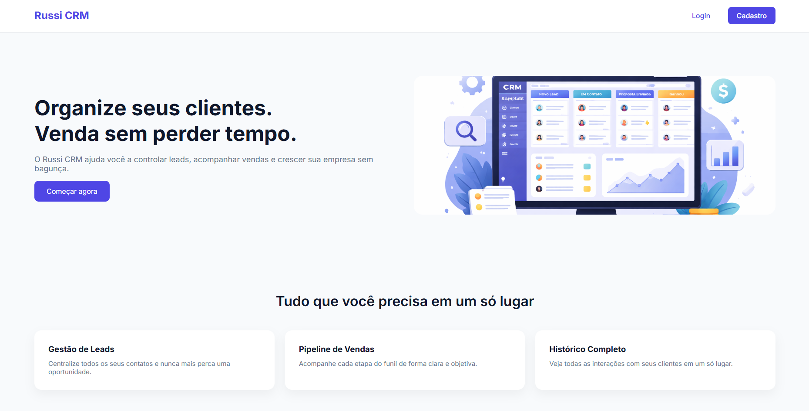

01
CRM
CRM é um sistema de gerenciamento de relacionamento com clientes desenvolvido para ser simples, rápido e totalmente personalizável.
Ele foi pensado para empresas que precisam organizar clientes, leads e mensagens em um único lugar — e transformar informação em decisão, decisão em ação, e ação em vendas.
